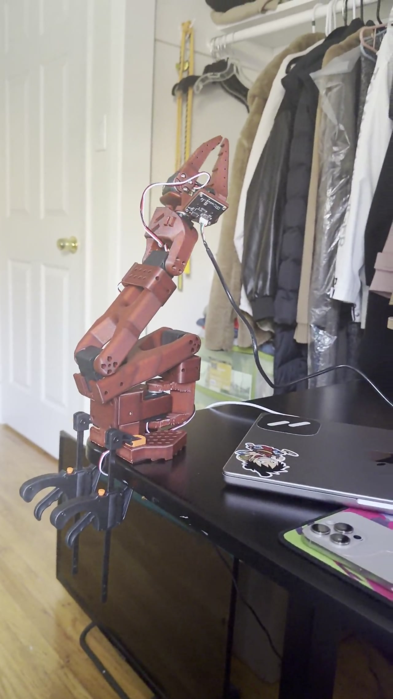

Year
2026
A fully 3D-printed robot arm running on the open-source LeRobot framework by Hugging Face — printed on the X1C, wired up, and in the middle of collecting training data. The goal: teach it to pick up and move objects through imitation learning.

LeRobot is Hugging Face's open-source framework for real-world robot learning. The idea: you teleoperate the arm through a task a bunch of times, collect the data, train a policy — then the arm does it on its own.
I printed the arm on the X1C using the open-source design, wired up the servos, and I'm currently in the pre-training phase — collecting teleoperation demonstrations to feed into the model.
Training hasn't started yet. The hard part is what comes after the prints are done.
All structural components printed on the X1C using BambuStudio — links, joints, gripper, and base. The open-source design is optimized for FDM so everything comes out clean without supports.
Servos in each joint, cables routed through the links, controller mounted at the base. Building it is half hardware engineering, half cable management puzzle.
Now the real work: teleoperating the arm through a task over and over, capturing each demonstration as training data. Once there's enough, the policy training starts. Still very much in progress.